Drone imagery capture and processing protocol
Travis Parker
The big idea
This tutorial is designed to help you get the data you want using drones. Use whichever sections are useful for you!
Part I. Processing raw images with Pix4Dmapper
Pix4Dmapper is an advanced service with many uses. It has a one-time cost for a permanent license, and is ideal for those planning to make many maps. It also allows for the use of calibration panels and has other advantages.
- Open Pix4Dmapper.
- Click “New Project” 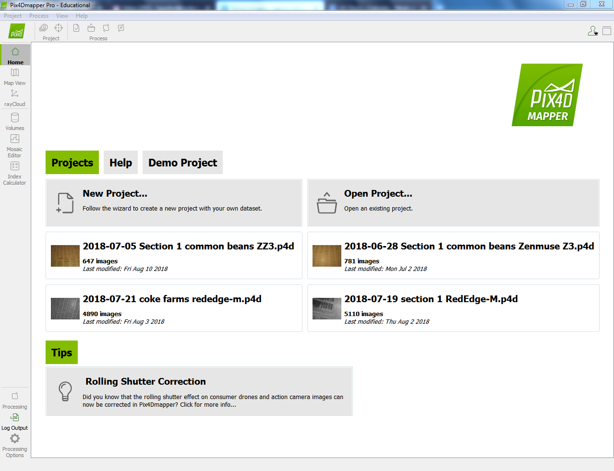
- Name the project. 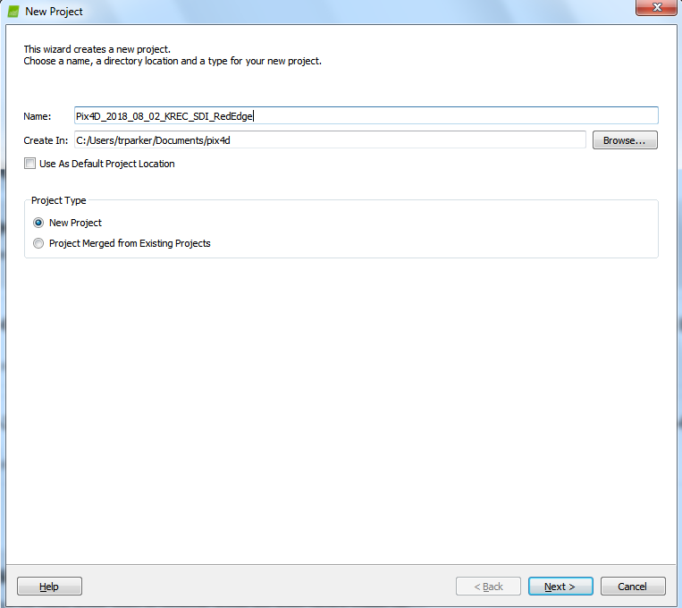
- Click “Add images” 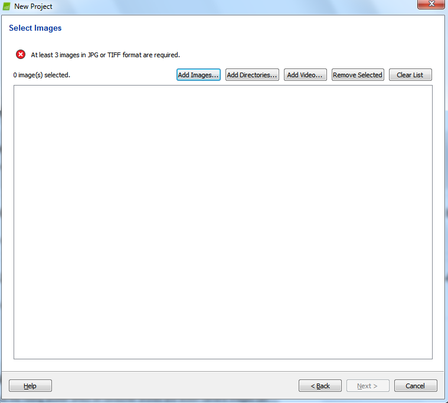
- Navigate to the folder of interest, and select images. Click “Open.” 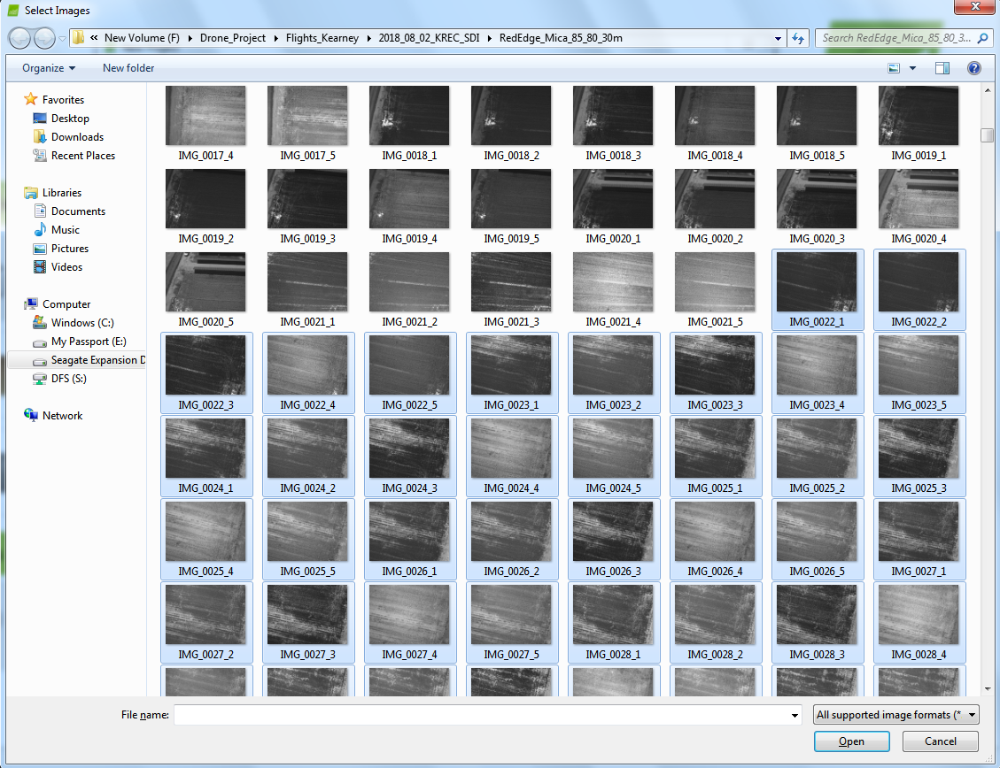
- Click “Next.” 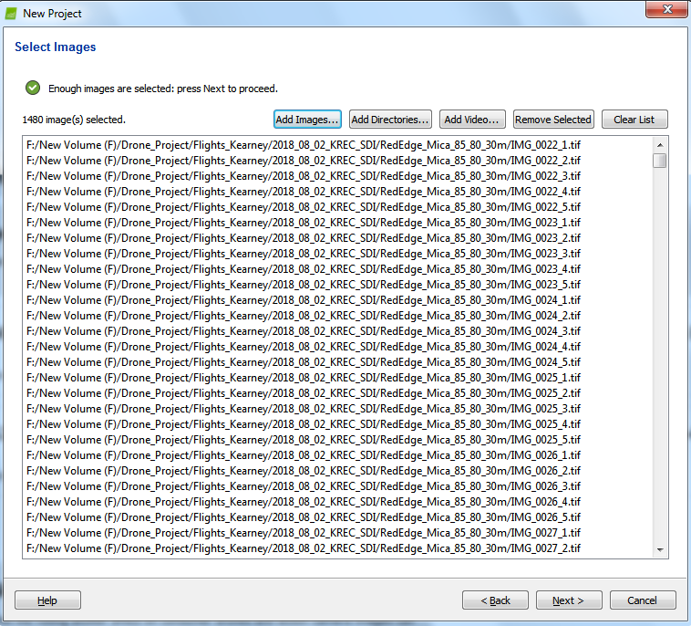
- Check the number of geolocated images in the next pane. Consider deleting images that aren’t geolocated. Those that are not geolocated properly will not have good latitude and longitude information. Click “Next.” 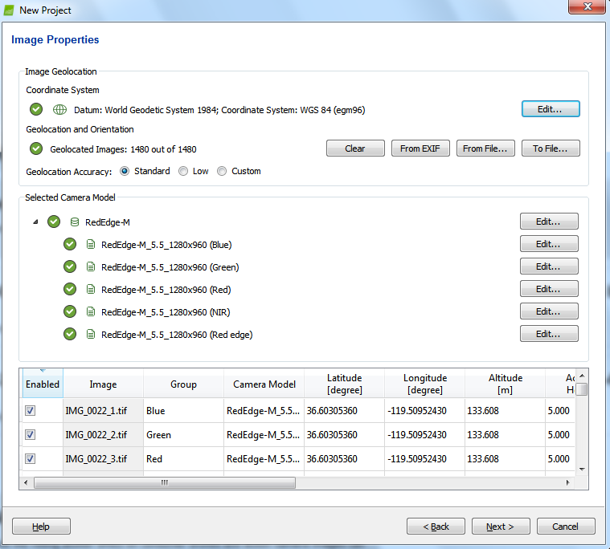
- Check the coordinate system, as it will be useful to know later in QGIS. It should not need to be changed for most purposes. Click “Next.”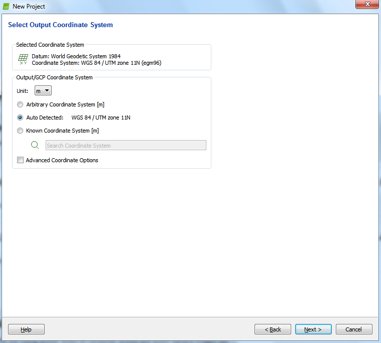
- Select the best processing option for your imagery type and needs. For multispectral cameras, choose “Ag multispectral.” For RGB cameras, use 3D Maps, 3D Models, or Ag RGB, depending on your imagery type. Check the Pix4D help page if you want more information than what is provided to the right. Do NOT click “Start Processing Now” at the bottom right. Click “Finish.”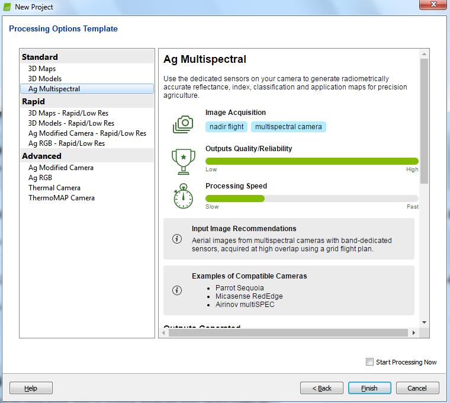
- You will now see a map with the locations of your image georeference points. Click “Processing Options” at the bottom left.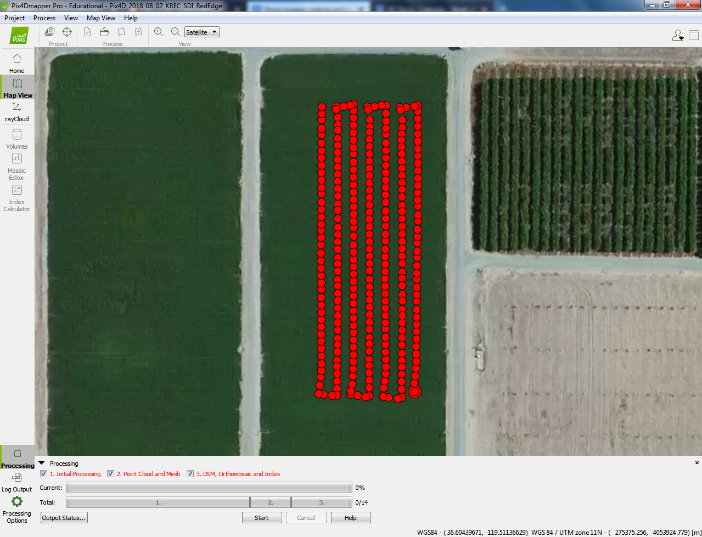
- In “1. Initial Processing” nothing usually needs to be adjusted. Click “2. Point Cloud and Mesh.” 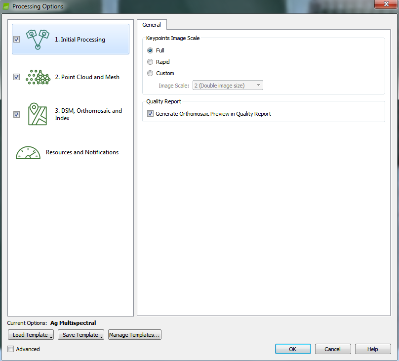
- If understanding the 3-dimensionality of your plots (i.e. canopy height and volume) is a priority, click “Classify Point Cloud.” Click “3. DSM…” on the left. 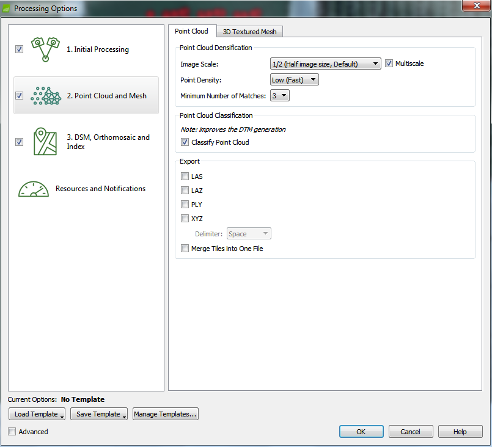
- Check the boxes for “Geotiff” and “Merge Tiles” in both the Raster DSM and Orthomosaic sections 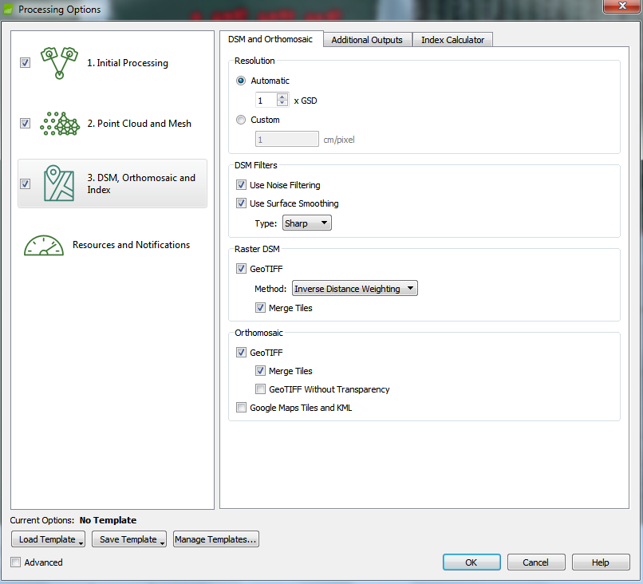
- Go to the “Additional Outputs” tab. Consider checking the box for “Geotiff” in the Raster DTM section. This is useful for comparing plant heights with predicted soil elevation.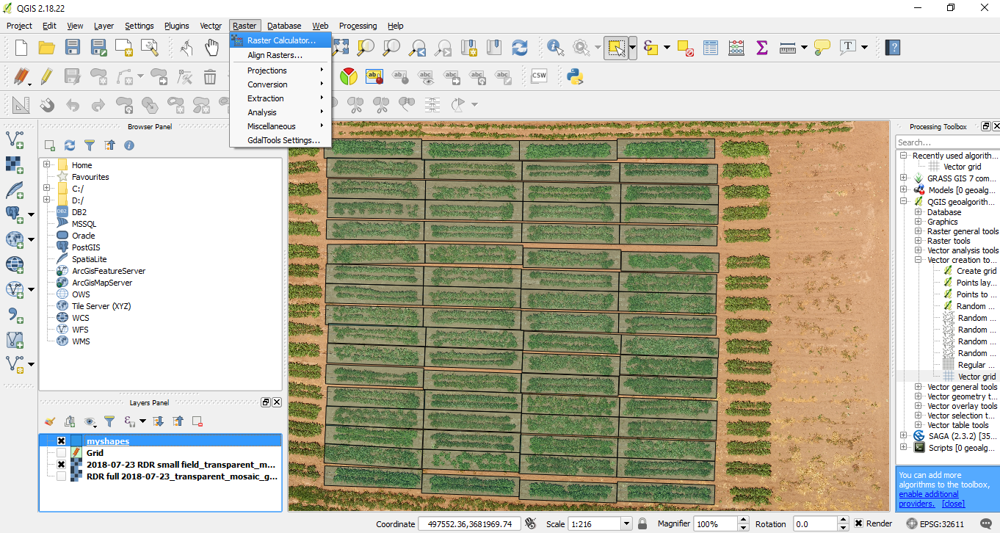
- For multispectral imagery, move on to the “Index Calculator” tab. This can be skipped for RGB imagery. In the section for Radiometric Processing and Calibration, select “Calibrate” for the Blue wavelength.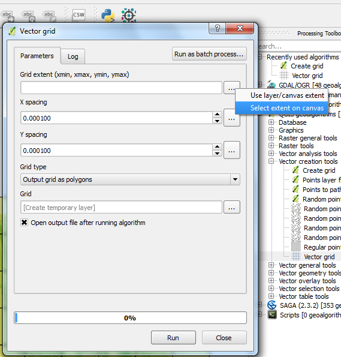
- In the new window, click “Browse” for a calibration image. For the RedEdge, the image numbers are ordered in the following way:
1: Blue
2: Green
3: Red
4: NIR
5: Red edge
This means that an image named “IMG_0003_2” will correspond to the green wavelength, because the FINAL number is 2.
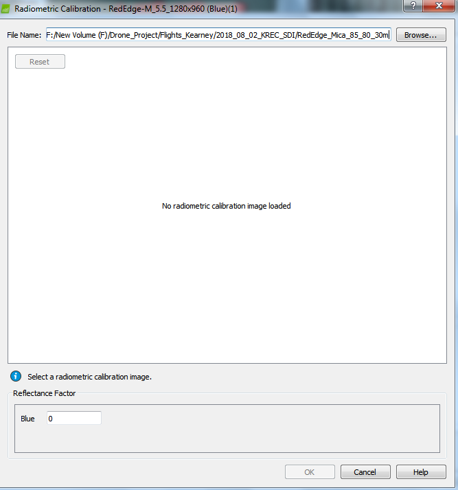
- After selecting your image, you can use your mouse to zoom in on the calibration panel. To draw your area of interest, left click three of the corners, and then right click the fourth and final corner. Right clicking will allow you to finish the shape. You will have to plug in a reflectance factor at the bottom, which will be specified by the manufacturer. Click “OK.” 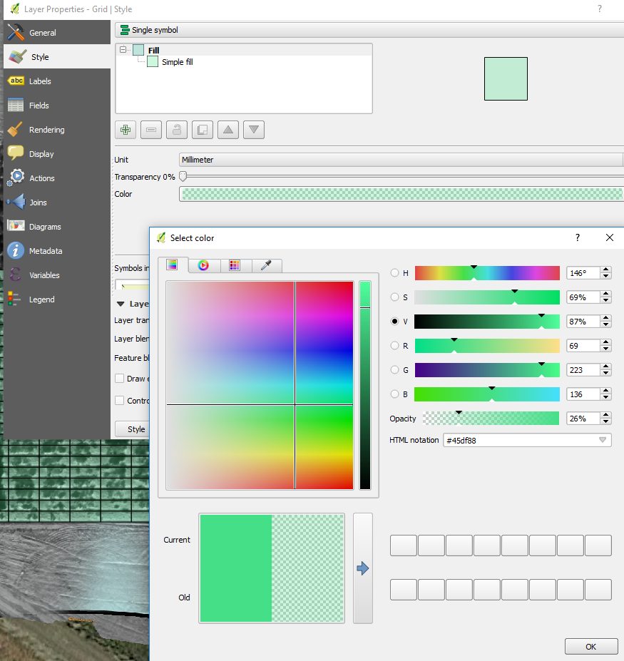
- Repeat the process for the other wavelengths. You should have green check marks next to all the bands.
- Scroll down. Check the box for “Merge tiles” in the Reflectance Map section. Check the boxes for indices at all the other wavelengths. Click “OK.”
- The project is ready to begin. If you do not plan on adding ground control points, you can hit “Start.” 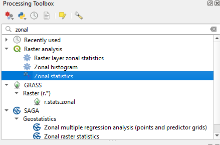Ground control points can be added in Pix4d to increase the location accuracy. To use these, uncheck the boxes for steps 2. and 3, then hit “Start”
- ….
Part II. Data extraction
How will we get numbers from images? QGIS!
I. Installing QGIS
1. Go to https://qgis.org/en/site/forusers/download.html
2. Download and install the QGIS Standalone Installer Version 2.18. It is important to download this stable long-term release rather than the other versions. Choose the appropriate version (32-bit or 64-bit) version for your system. In windows 10, this can be found by searching and navigating to “System”. It will be listed next to “system type”. 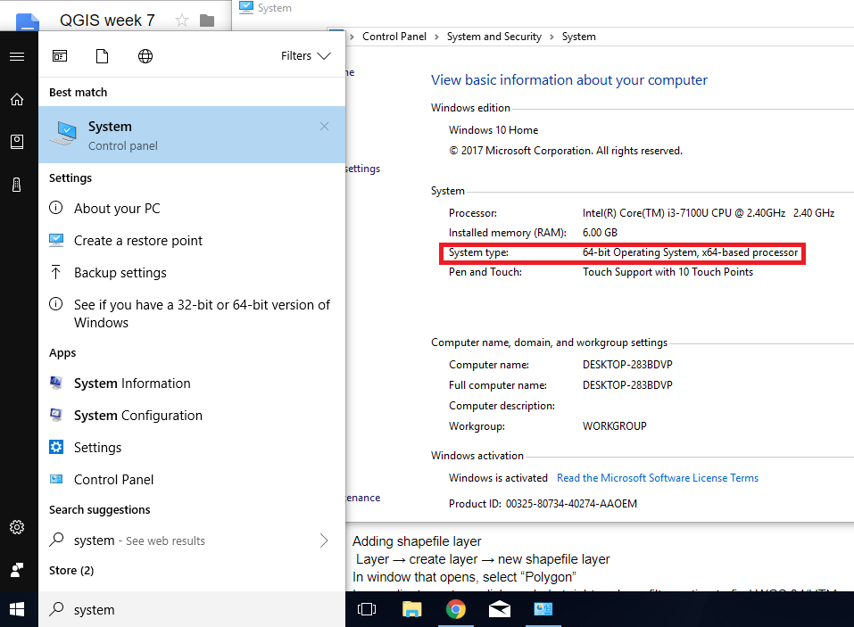
3. Open QGIS.
4. Project → New.
5. Select tif image or other file of interest and drag it into the blank area in the middle of the project.
Layers Panel: Files you have added will show up in the Layers Panel at the bottom left. Uncheck the box next to them to hide them. Layers shown at the top of the list will cover the other layers in the main part of the screen. If you ever zoom too far out, you can right click the layer in the Layers Panel and click “Zoom to Layer” to find it again.
II. Coordinate reference systems
It is important that all your imagery is in the same coordinate reference system. If it isn’t, then all kinds of errors can occur. Images imported from Pix4D will be in the appropriate coordinate reference system (EPSG 32610 for Davis, Richvale, and the surrounding area). For Maps Made Easy outputs, use the following steps:
- After adding your map into the new project, click the ESPG: button at the bottom right:
- At the top of the new window, click “Enable ‘on the fly’ CRS transformation”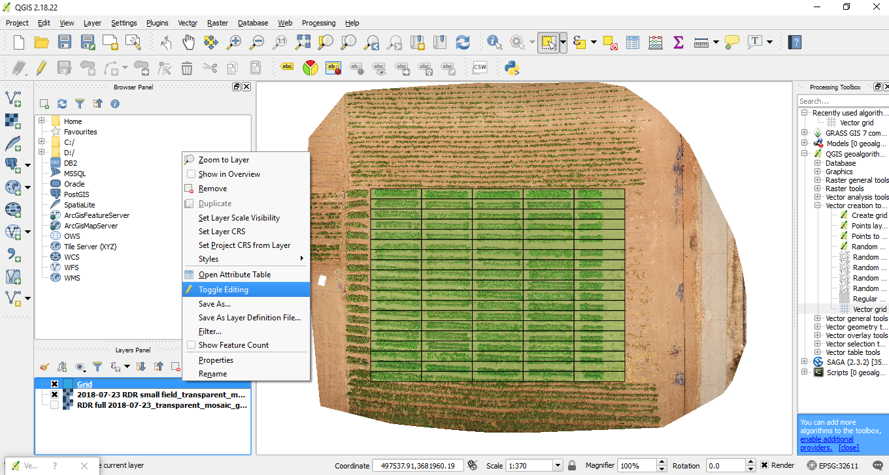
- In the field below “Recently used coordinate reference systems” select WGS 84 / UTM zone 10N EPSG:32610”
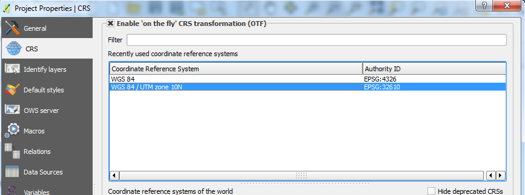
- Click “Apply” at the bottom of the window.
- In the Layers Panel, right click the layer and select “Save As…” 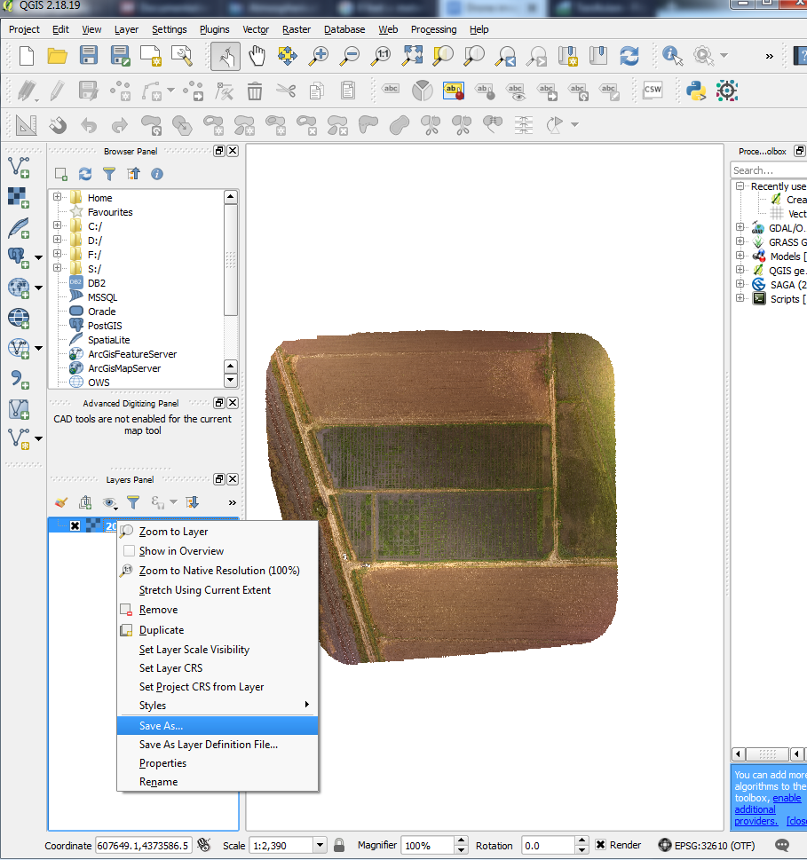
- Click “Browse” to the right of “Save As” and determine where to save the file. Name it something that will indicate the new CRS. 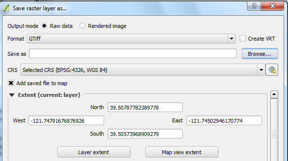
- In the dropdown box next to “CRS,” select EPSG:32610.
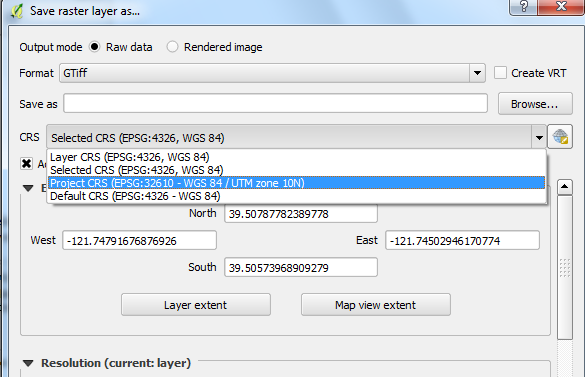
- Click “OK” at the bottom to save and close.
- Right click the new layer and open “Properties.” In the “General” tab to the left, check that it saved to the coordinate system properly.
- Right click the original layer (with the unwanted CRS). Click “Remove” and delete it. This will limit confusion in future analyses. Continue using the new layer.
III. Optional: Georeferencing an image
Note: This is useful for lining up flights from different days or flights flown by different drones, but it is optional and depends on your application.
- Plugins→ manage and install plugins.
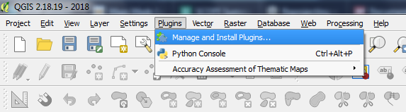 - Click “Installed” at the left of the new window.
- Check box for “Georeferencer GDAL.” Close the window.
- Raster → georeferencer → georeferencer. 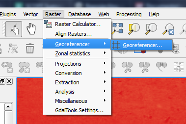
- In the new window: File → Open Raster.
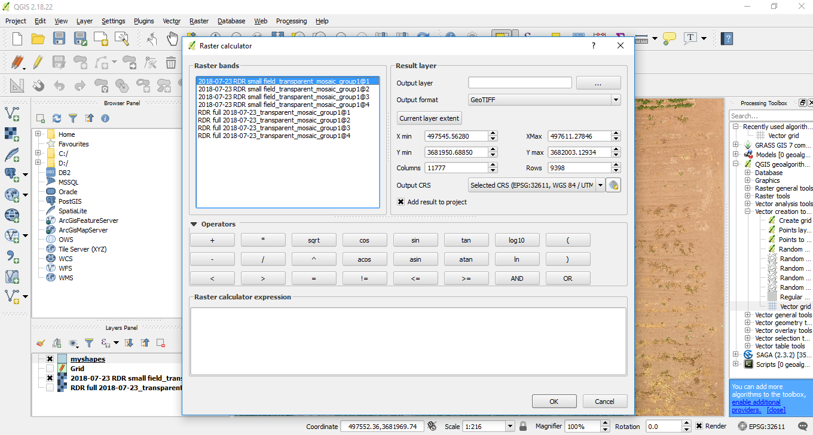
- Open the tif file of interest (to be corrected).
- Click a point that can be compared between maps, and in new window that pops up, click “from Map Canvas”. Then select the corresponding point in the other map.
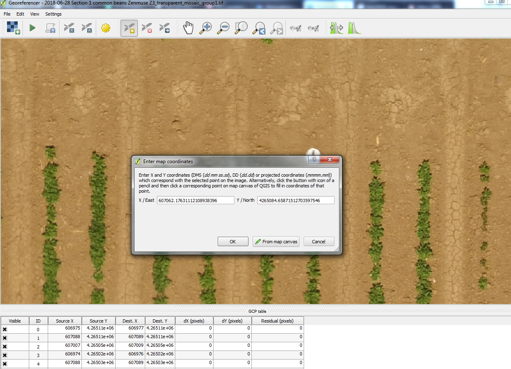
- Repeat the step above for 10-15 points.
- Click the green play button (“start georeferencing”).
- In the window that pops up, for transformation type, select “Thin plate spline” (I don’t recommend “linear”, which will only move+rotate+expand/contract the raster, not correct spatial distortions!) and “cubic” method. Select a folder for the new file and give it a name. At the bottom, ensure that the box for “Load into QGIS when done” is checked. Click OK. If you need to access this window later, you can do so in settings → Transformation settings.
Thin plate spline → cubic is better than linear → nearest neighbor for complex distortions!!
IV. Setting up grid of shapefiles
- Open project, drag the tif files (orthomosaics or digital surface models) into the blank empty space in the middle of the new project.
- If processing toolbox is not displayed, go to View → Panels → Processing toolbox.
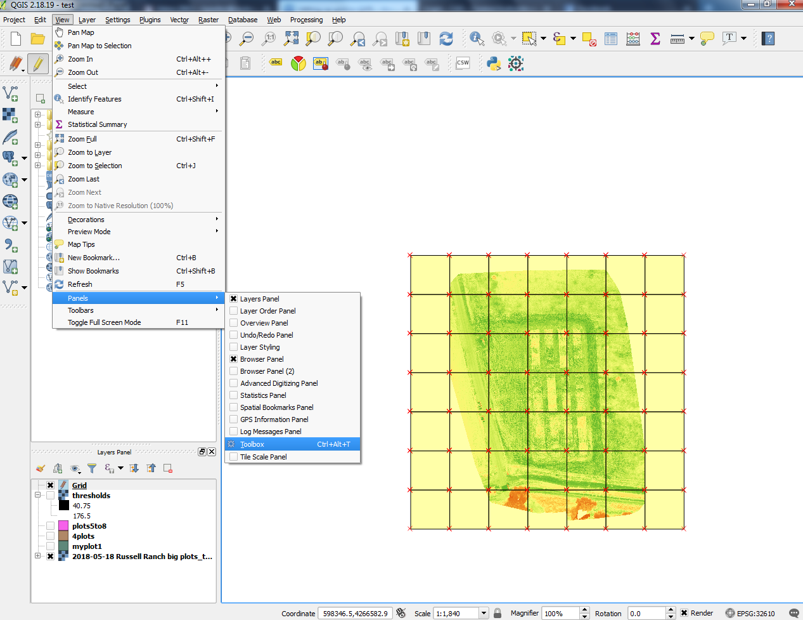
- In the processing toolbox, search “Create Grid”
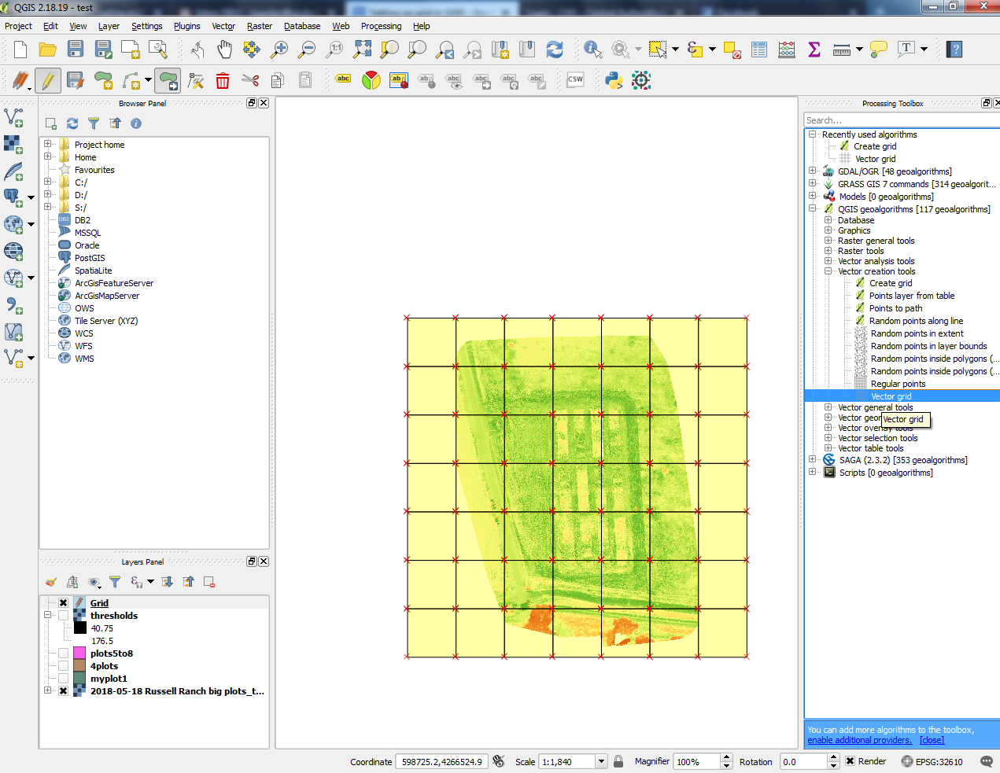
- In the vector grid window, the first box allows you to select the area of interest. Click the three dots on the right, click “select extent on canvas”, and select using the mouse. It is okay for the grid to cover a bigger total area than you will need, you can always trim it later.
- In the next two boxes, select your grid size (note: this is in meters… the default values are extremely small and you will need to increase the spacing between the beginning of plots horizontally and vertically. If your plots are 20 feet long horizontally with a five foot alley between plots, set your horizontal spacing to 7.62 (25’=7.62m)).
- Click “Run.”
V. Editing the grid.
- It’s useful to see your grid of polygons and the map/imagery simultaneously. In your layers panel on the bottom left, right click your polygon layer and choose “properties”, click the colored area shown after the word “color”, and in the next window, reduce the opacity to 25%-30% or so.
- To change the opacity of the grid when selected, click Project → Project properties.

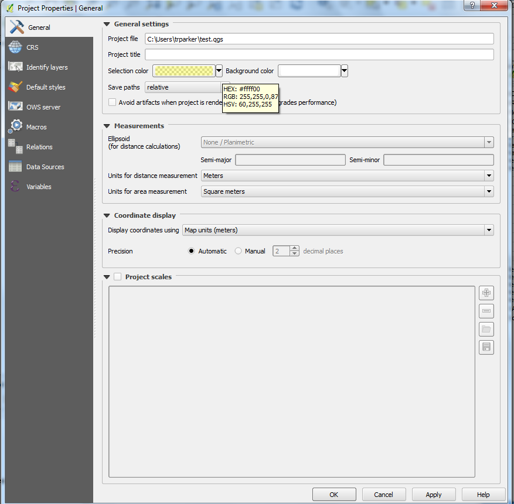
3. Click the color shown after “selection color”. Then adjust “opacity” (on the left, near the middle) to about 25%.
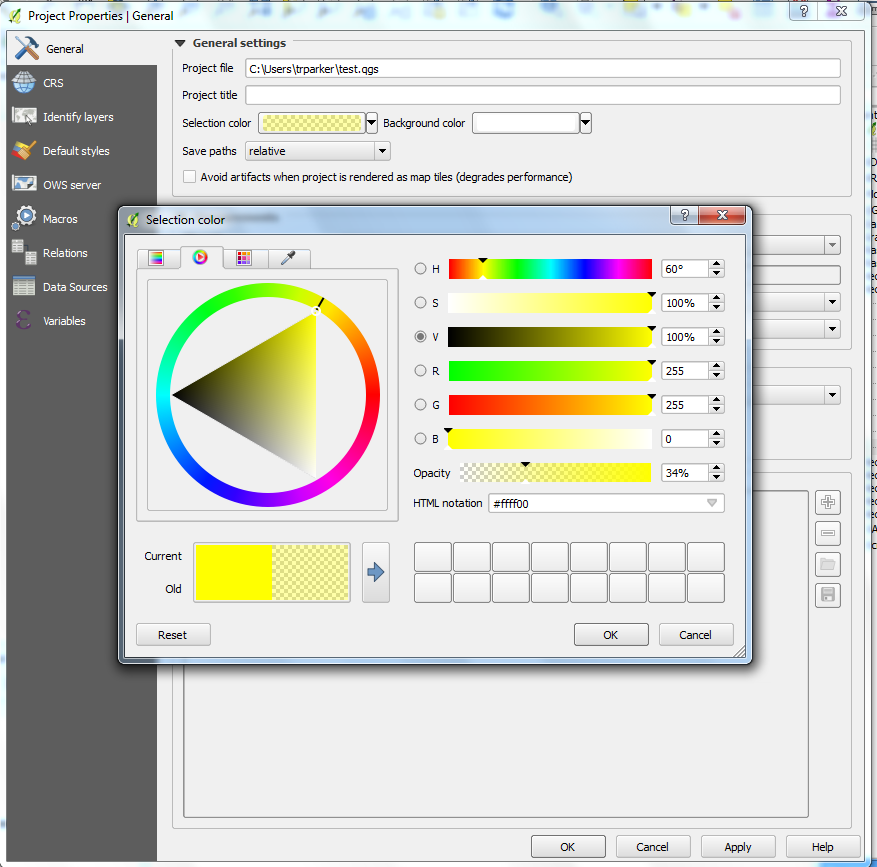
4. Note that this only makes them transparent when they are selected (see below).
5. Do you have extra cells in your grid? Are the cells at a different angle than your plots? Do the cells not match up properly? As long as the cells are the right size, these other issues can be fixed now. If the cells are clearly not the right size, recalculate the plot spacing and repeat the grid setup.
6. To adjust our grid, we have to toggle editing on for it. Right click the layer in the “Layers panel” at the bottom left and click “toggle editing”.
7. Select features of interest using the following, found near the top center/right:  Note: you can individually select one feature, you can use the control key to select multiple polygons, or you can drag a box over multiple polygons to select many at once.
Note: you can individually select one feature, you can use the control key to select multiple polygons, or you can drag a box over multiple polygons to select many at once.
8. Use the basic editing functions at the top right, discussed previously.
9. It is normal to have extra cells in your grid. Left click and drag a box over the unwanted cells using the mouse to select them. Then click “delete” on your keyboard.
10. Consider selecting all of them, and moving the polygons into place using the “move feature” tool.
VI. Rotating a grid
- In View → Toolbars, click the box for “Advanced digitizing toolbar”
- Select all the polygons you want to rotate, then click the symbol.
- Rotate and reposition the entire grid or individual areas as desired.
- Important: When you are happy with your grid, right click it in the layers panel at the bottom left. Click “Save as…” and save it somewhere. You will need to adjust the opacity for your newly saved layer.
VII. Calculating vegetation indices
The visible atmospheric resistant index (VARI) is a useful index for determining plant area and health. Healthier plants typically have higher values.
Excess Green (ExG) may be more useful for certain applications, such as distinguishing plants from non-plants.
- The equation for Excess Green is:
2 * (Green / (Red + Green + Blue)) – (Red / (Red + Green + Blue)) – (Blue / (Red + Green + Blue))
(2 * ("Pix4D_2019_07_16_Zenmuxe_X3_index_green@1"/("Pix4D_2019_07_16_Zenmuxe_X3_index_red@1" + "Pix4D_2019_07_16_Zenmuxe_X3_index_green@1" + "Pix4D_2019_07_16_Zenmuxe_X3_index_blue@1")))-(("Pix4D_2019_07_16_Zenmuxe_X3_index_red@1"/("Pix4D_2019_07_16_Zenmuxe_X3_index_red@1" + "Pix4D_2019_07_16_Zenmuxe_X3_index_green@1" + "Pix4D_2019_07_16_Zenmuxe_X3_index_blue@1")+("Pix4D_2019_07_16_Zenmuxe_X3_index_blue@1"/("Pix4D_2019_07_16_Zenmuxe_X3_index_red@1" + "Pix4D_2019_07_16_Zenmuxe_X3_index_green@1" + "Pix4D_2019_07_16_Zenmuxe_X3_index_blue@1")))
The equation for VARI is:
(Green - Red) / (Green + Red - Blue)
For this exercise, we will continue using VARI.
- Go to Raster → Raster calculator.
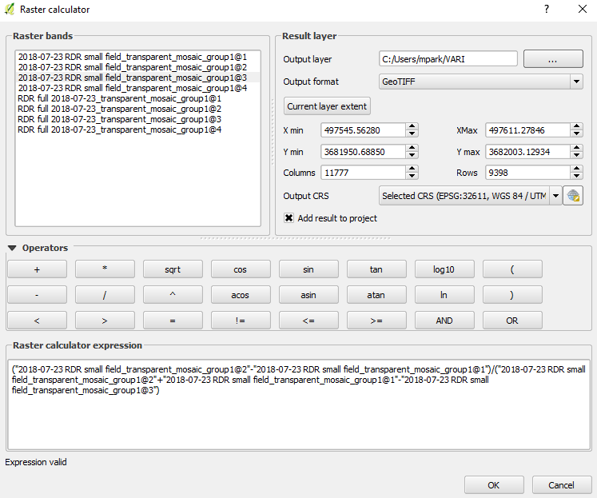
- In the raster calculator, we can create equations and generate maps for vegetation indices. Start by clicking the three dots to the right of “Output layer” to give your file a name and folder when saved.
- In the box at the bottom (“Raster calculator expression”), write your mathematical expression using either your keyboard or the operators provided in the window.
- To select wavelengths of interest, double-click the corresponding raster band at the top left of the window.
- For RGB orthomosaics:
Red = IMAGE_NAME@1
Green = IMAGE_NAME@2
Blue = IMAGE_NAME@3
- To calculate VARI, your expression should look something like this:
- Click OK.
- After a few seconds, the new band will appear in your layers panel and interface. It should look something like this:
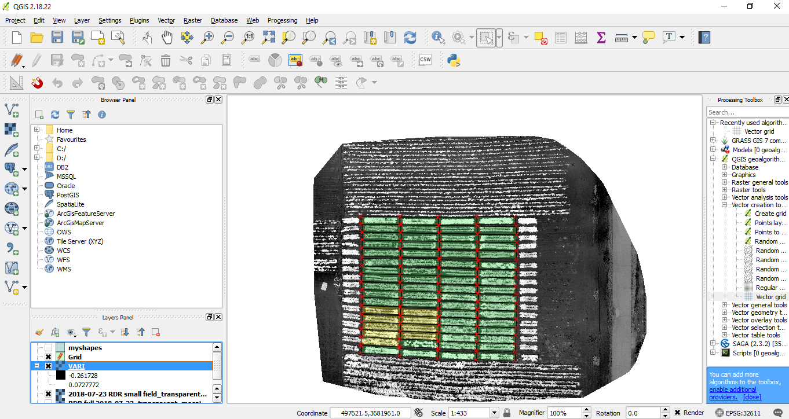
VIII. Optional: Making your vegetation index map look more awesome
- Right click name of project in layers panel at bottom left.
- Click “properties”.
- Click “style” (at left).
- Change render type to “singleband pseudocolor.”
- Change color to “RdYGn”, “Inferno”, or whatever you prefer.
- Change “Mode” to “Equal interval” and “Classes” to “10.”
- Click “OK.”
IX. Distinguishing between plant canopy and soil
Want to calculate the canopy area of your plots? To do this, we will need to come up with a threshold for VARI. Above this value, we will consider everything to be living plant canopy. Soil, dead plant residue, and most other materials will be below it. We will use the Raster Calculator for doing this as well.
- Reopen the raster calculator, Raster → Raster Calculator.
- As done previously, click the three dots to the right of “output layer” to give a name and directory to the new file you will create.
- In the Raster Calculator Expression box, enter an expression as follows:
(Your vegetation index file name) >= threshold value (0.5 works well for NDVI, use other numbers for other VIs)
- The value of the threshold will need to be adjusted for different vegetation indices, and at times for lighting, camera settings, etc.
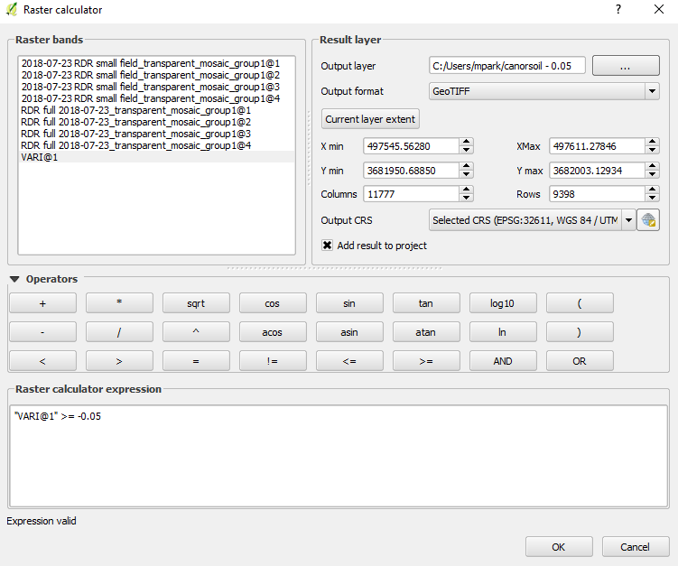
- Check the quality of your threshold by comparing it to your RGB orthomosaic. To do this:
- Find the “Layers Panel” at the bottom left.
- Uncheck any files other than your RGB orthomosaic and the new threshold file.
- Check and uncheck the new threshold file to make sure there is good correspondence between the highlighted area in your threshold file and the original orthomosaic. It should look something like this:

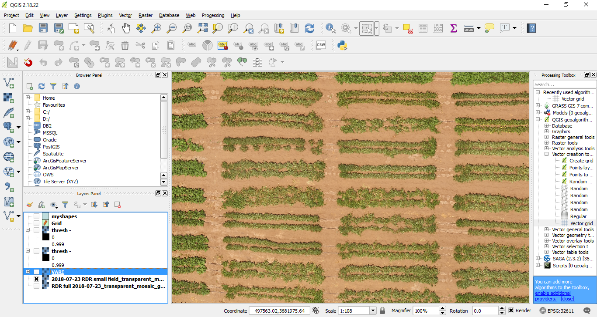
- If your threshold file underestimates canopy area, repeat steps 1-5 with a lower value for the threshold. If a lot of soil or other material is counted as canopy, then increase the threshold value.
X. Determining canopy area
We will determine canopy area with the zonal statistics plugin. This is a core plugin and should already be installed. Check to confirm that it is installed with the following steps:
- At top left, open “Plugins” → Manage and install plugins → “Installed” (at left), and check the box to the left of “zonal statistics.”
- Close the window.
- Click “Raster” → “Zonal statistics” → “Zonal statistics”. A new window will appear.
- Below “Raster layer” select the raster layer with the threshold layer (from part IX) that masks soil out but keeps non-soil pixels.
- Below “Polygon layer containing the zones”, select your shapefile layer.
- Below “output column prefix”, make a very short header for all your columns, eg. “area_”
- Below “Statistics to calculate, check whichever boxes you want data for. For simple canopy cover, just check the boxes for “count” and “sum”. Use the following as a guide to check your work from the last few steps:
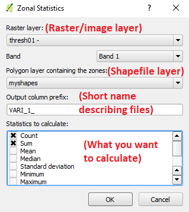
- Click “OK.”
- In the Layers Panel, right click the polygon layer you just used to calculate zonal statistics. Select “Open attribute table”.
- Use Ctrl+A and Ctrl+C to copy the whole attribute table.
- Open a new Microsoft Excel spreadsheet.
- Use Ctrl+V to paste the spreadsheet into your document. The default for the cells is to be numbered the way we read, starting at the top left and moving to the right, then moving down a row and then continuing left to right. Sort your fieldbook by plot row and column, then transfer the data. Check a few plots to confirm that no errors were made.
- Close window.
XI. Calculating vegetation indices with soil masked
You can use your shapefiles and VARI map to calculate average VARI values for each plot. The problem with this, however, is that much of the plot area may be soil, water, or other material. In these cases, your average values will largely be based on canopy cover, not canopy health.
How do we determine the health of plants, while ignoring soil or water?
We already made a threshold file that can distinguish between plant and non-plant. Now we will use it to remove non-plant area for each plot. This is called masking.
- Open the raster calculator.
- Click the three dots at the top right to name your file and give it a folder to save to.
- Click the box at the bottom. Then double click the raster bands of interest to plug in the following expression:
“VARI_LAYER_NAME” / “THRESHOLD_LAYER_NAME”
The two files above were described in sections IV and IX, repectively. The file window should look like this:
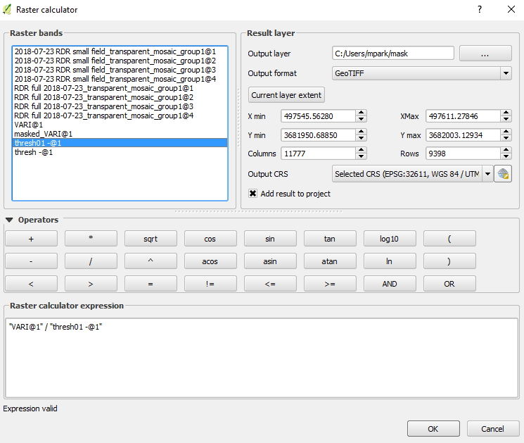
- Click OK.
- In a few seconds, a new layer will appear in your layer panel. It will only have color where the values are above your threshold, while soil will be transparent (This is because the non-plants were stored as “0” values in our threshold file, while plants were stored as “.999”. Dividing by 0 gives an NA, and the computer ignores the value). Use the zonal statistics plugin to extract plot statistics, as described previously.
XII. Calculating canopy volume and height
- Generate a canopy/soil mask layer (also known as a threshold layer), described in section IX.
- Drop the digital surface model (DSM) from your Pix4D outputs into your QGIS project.
- Using the raster calculator, input the following equation:
DSM_LAYER / THRESHOLD_LAYER
This will yield the DSM of just the canopies, without the soil. I name this the cDSM.
- To determine the height of the soil in the same area, use the following equation:
DSM_LAYER / (THRESHOLD LAYER < 0.5)
I name this soil DSM “sDSM.”
- Check that the cDSM and sDSM files formed properly.
- Use the zonal statistics plugin to export maximum cDSM values (maximum canopy altitude), mean cDSM values (mean canopy altitude), and median sDSM values (median soil altitude)
- Export the results in the attribute table to Excel or R, and in one of these programs subtract the mean cDSM values for each plot from the median sDSM, yielding average canopy height. Subtract maximum cDSM values from median sDSMs to identify maximum height per plot
- To determine canopy volume, multiply the mean canopy height times the canopy area from section X.
XIII. New projects, and how to save a polygon layer.
- Flying the same field twice? You don’t need to recreate your shapefiles. Just go to Layer → Add layer → Vector layer. Select a shapefile layer of interest to you, but make sure your other QGIS file isn’t open. In other words, if you want to copy the a shapefile layer from a flight on July 1, make sure your July 1 project is closed.
- Before you make any changes to the layer, right click it in the Layers Panel, then click Duplicate.
- In the Layers Panel, right click your newly duplicated shapefile and click “Save As...” Save to the appropriate folder.
- Delete the original two shapefiles.
- Important: Move your shapefiles slightly if needed to ensure that they match up with the plots. Maps placement may differ by up to a few meters.
- Before using the shapefiles, check for unwanted contents in the shapefile attribute tables.
- Open the attribute table by right-clicking in the Layers Panel.
- If you have unwanted columns, delete them by clicking the small pencil at the upper left of the attribute table. Then click the delete fields symbol and click any of the column names you want to remove. Click “OK.”
- After making any edits, save the edits to the layer. Make sure the shapefile layer is selected in the Layers Panel, and click the save symbol next to the toggle editing symbol at the top left. Click the toggle editing symbol to turn off editing for the layer.